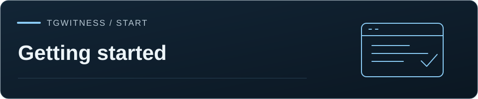

Manba / Yig'ish
Panel bo'yicha qo'llanma
Panelning har bir ekrani: suhbatlar, jurnal, manbalar, eksportlar, Extras, himoya rejimlari va kod tekshiruvi.
TgWitness / Hujjatlash · Boshlash

Birinchi sozlash va parametrlar · Hisoblar · Eksport va tekshirish · Holat hisobotlari
Har bir ekran nima qilishini, imzolangan jurnalga nimalarni yozishini va batafsil qo'llanma qaerda ekanligini ko'rsatadi. Panel bir vaqtning o'zida bitta ish maydonini ko'rsatadi: o'z manbalari, jurnali va imzolash kalitiga ega bitta Telegram hisob. Yon panelning yuqori qismidagi selektor ish maydonlarini almashtiradi. Manzil ish maydonini o'zida saqlaydi (?ws=…); manzil ish maydonini o'zida saqlaydi ( manzil, selektor va yuklangan hisob bir-biriga to'g'ri kelmasa, harakatlar bloklanib qoladi.
Jonli kuzatuv, to'liq tarix, yangi hisob/suhbat eksportlari va saqlangan yozuvlarni topshirish o'rtasida tanlash uchun Eksport usullarini solishtirishdan foydalaning. Eksportlar sahifasi yuklab olish boshqaruvlaridan yuqorida xuddi shu solishtirishni o'z ichiga oladi.
Ushbu sahifada
Yo'lingizni toping#
Kunlik bo'limlar yon panelning yuqori qismida, Hisoblar esa Ish maydoni ostida joylashgan, va boshqa barcha narsalar Qo'shimcha vositalar va sozlamalar ostida. Yuqori panelda joylashgan Interfeys darajasi kaliti nechta bo'lim ko'rinishini belgilaydi:
| Daraja | Yon panel bo'limlari |
|---|---|
| Oddiy | Bosh sahifa, Suhbatlar, O'zgarishlar, Arxivlar va Sozlamalar |
| Standart | Shuningdek Case Board, Hisoblar va Kirish |
| Mutaxassis | Shuningdek Manbalar, Qo'shimchalar, Arxivga so'rov, Parametrlar, Hisob, Tizim logi va Integratsiyalar |
Oddiy qo'ng'iroqlar: Mana bu yerdan boshlang, Jurnal va Eksportlar bosh sahifasi, O'zgarishlar va Arxivlar. Daraja faqat bo'limlarni yashiradi. Yashirin xususiyat ishlashda davom etadi va server har bir ruxsatni mustaqil ravishda tekshiradi. Daraja, til, mavzu va vaqt zonasiga operator va ish maydoni bo'yicha alohida saqlanadi; sozlamalarni ko'ring.
Yuqori panelda shuningdek quyidagilar mavjud:
- Bo'limga o'ting (Ctrl+K yoki Mac'da ⌘K): suhbat, parametr yoki jurnal yozuvini toping
#number. Yuk yo'nalish tugmalari harakatlanadi, Enter ochadi, Esc yopadi. - Bildirishnomalar: jurnal orqali aniqlangan muammolar va suhbat o'zgarishlari. Hammasini o'qilgan deb belgilash hisoblagichni tozalaydi va Bildirishnoma qoidalari oynasini ochadi. Telegram, Discord yoki elektron pochta orqali yetkazib berish Qo'shimchalar → Bildirishnomalar bo'limida sozlanadi.
- Ushbu ish maydoni uchun ulanish indikatori. Yuqori panel ostidagi Collector holati uni Telegram ulanishi, voqealarni qabul qilish, manbalar va ilova navbatiga bo'ladi.
- Qulflash: ushbu brauzerdagi panelni yopadi. Kollektsiya serverda ishlashni davom ettiradi.
- Versiya raqami yonidagi himoya rejimi; himoya rejimlariga qarang.
Demo ish maydoni badiiy xabarlardan iborat bo'lib, hech qachon Telegramga ulanmaydi. Haqiqiy ish maydonini o'zgartiradigan harakatlar u yerda rad etiladi.
Mana bu yerdan boshlang#
Vazifa tanlang. Hisobimni eksport qilish hozirda hisobingiz o'qiy oladigan ma'lumotlarni yuklaydi. Tergovni kuzatish siz tanlagan suhbatlardagi yangi xabarlar, kuzatilgan tahrirlar va o'chirish bildirishnomalarini qayd etadi. Sozlash kartasi uch bosqichni ko'rsatadi: hisobni ulash, manbalarni tanlash, kuzatuvni boshlash. Maqsad savoli siz uni javob berguningizcha yoki o'tkazib yuborganingizcha shu sahifada qoladi. Yangi ish maydoni o'rniga birinchi sozlamani ochadi.
Suhbatlar#
Saqlangan suhbatlar, standart bo'yicha faqat o'qish uchun.
- Ro'yxatni nom yoki ID bo'yicha qidiring. Kuzatilayotgan suhbatlarni qo'shish yoki olib tashlashni tanlang.
Telegram havolasini ochish foydalanuvchi nomini yoki taklif havolasini oladi va jurnalga oldindan ko'rinishni saqlaydi.
Qo'shish/ochish va kuzatish suhbatga qo'shiladi va uni manbalariga qo'shadi;
botni ochish uni yuboradi
/start. - Suhbat sarlavhasida xabarlar soni o'chirildi, matn saqlandi, saqlashdan oldin o'chirildi va qayta tekshirishda topilmadi hisoblanadi. Suhbat ro'yxati va bildirishnomalar ham shu ta'riflardan foydalanadi. O'chirilgan xabar qizil rangda bo'lib, saqlangan matnini saqlab qoladi; tahrirlangan xabar esa har bir saqlangan versiyasini saqlab qoladi. Har bir o'chirish nimani anglatishini ko'rsatadi: u qachon ko'rilgani, Telegram kim uni o'chirganini xabar qilmasligi yoki faqat bildirishnoma kelgani.
- Tarixni yuklash oxirgi 100, 250 yoki 500 xabarni ushbu ko'rinishga va jurnalga olib keladi. Har bir yoqitilgan manbani yuklash uchun Manbalar → To'liq tarixni ishlating.
- Suhbatni eksport qilish butun ko'rinadigan tarixni imzolangan
chat.jsonvachat.html. Bir nechta bog'langan hisoblar ishni bo'lishishi mumkin: har biri o'zining xabar raqamlari diapazonini yuklab oladi va o'z qismini imzolaydi, eksportni boshlagan hisob esa arxivni imzolaydi. Bir suhbatni eksport qilishni ko'ring. - People ro'yxati ushbu suhbatda saqlangan xabarlari bo'lgan har bir kishini ko'rsatadi. People profillari odatda o'chirilgan, chunki ular uchinchi tomonlar haqidagi shaxsiy ma'lumotlardir. Suhbat uchun ular yoqilganda, profil ism va foydalanuvchi nomi tarixi, Telegram bayroqlari, avatar xeshlari, faollik, kim kimga javob berayotgani, boshqa kuzatilgan suhbatlar hamda tilga olingan hamyonlar, telefonlar, foydalanuvchi nomlari va havolalarni ko'rsatadi. Har bir fakt o'z yozuviga havola qiladi. Profilni eksport qilish imzolangan faylni saqlaydi, ixtiyoriy ravishda parol bilan himoyalanganZIP; profillarni o'chirish esa profil faylini o'chirib tashlaydi. Odamlar profillarini ko'ring.
- Endi profilni saqlash suhbat yoki bot profilining snapshotini yozib oladi: tavsif, a'zolar, taklif havolasi, bot buyruqlari.
Faqat o'qish, yuborish va sirlar#
Xabarlar ustidagi ikkita kalit hisobni va o'quvchini himoya qiladi:
- Suhbat ochilganda faqat o'qish rejimi yoqilgan bo'ladi. Xabar yuborish yoki bot tugmalarini bosish uchun uni o'chirib qo'ying. Har bir harakat "@account sifatida yuborishmi?" yoki "@account sifatida ushbu bot tugmasini bosishmi?" deb so'raydi, suhbat a'zolariga ko'rinishini va imzolangan jurnalga yozilishini bildiradi. "10 daqiqa davomida yana so'ramaslik" opsiyasi suhbatda keyingi so'rovni vaqtinchalik o'tkazib yuboradi. Dalil maqsadi uchun yuborish paneldagi va API-dagi yuborish funksiyasini o'chirib qo'yadi.
- Mask secrets parol, kirish kodi, API kaliti yoki hash, bot tokeni, sessiya satri, xususiy kalit, JWT yoki to'lov kartasi raqamini (karta raqamlari Luhn yig'indisi bo'yicha tekshiriladi) yashiradi. Show bitta qiymatni ko'rsatadi; bu ko'rsatish jurnalda qayd etiladi. Ushbu brauzer uchun maskalashni o'chirish ham qayd etiladi. Faqat ko'rinish o'zgaradi: asl yozuvlar va har bir eksport to'liq matnni saqlab qoladi.
Jurnal#
Ish maydoni imzolagan har bir yozuv, eng yangi yozuvdan boshlab.
- Ushbu ko'rinish kuzatilgan xabarlar, qayd etilgan tahrirlar, o'chirish bildirishnomalari va tanlangan manbalar sonini ko'rsatadi.
- Voqealar kronologiyasi voqea turiga (barchasi, tahrirlar, o'chirishlar, munosabatlar, a'zolik, qamrov), matn va manba bo'yicha filtrlaydi. Oldingi voqealarni yuklash sahifani orqaga qaytaradi.
- Yozuvni oching va uning tafsilotlari, xesh va yuklamasini ko'ring. Ushbu yozuvga havola — bir xil yozuvni ochadigan manzildir. Imkoniyati bo'lgan sirlar ushbu ko'rinishda yashiriladi; eksportlar esa asl nusxani saqlaydi.
- Jurnal faqat qo'shimcha kiritishga mo'ljallangan: panelda hech narsa yozuvni tahrirlamaydi yoki o'chirib tashlamaydi. Buni Exports → Verify journal or orqali tekshiring
python -m tgwitness.verify; eksport va tasdiqlashni ko'ring.
Manbalar#
Ushbu ish maydoni qaysi suhbatlarni yozib olishini va ulardan nimalarni saqlab qolishini. O'zgarishlar kelajakdagi faoliyatga tatbiq etiladi; saqlangan yozuvlar esa o'zgarmay qoladi.
Suhbatlar ro'yxatini yangilash hisobning suhbatlari va papkalarini o'qiydi. U xabarlarni yuklab olmaydi.
Doira#
- Ushbu hisob nima yozib oladi : Tanlangan suhbatlar (faqat siz qo'shgan suhbatlar), Telegram papkasi (hisob papkalaridan biri, keyinchalik qo'shilgan suhbatlar bilan birga) yoki Butun hisob (har bir suhbat, shuningdek paydo bo'lishi bilan har bir yangi guruh, shaxsiy suhbat yoki bot). Tergov rejimi maxsus hisob uchun mo'ljallangan: u hisob ko'radigan barcha narsalarni, o'z xabarlari va tugma bosishlarini yozib oladi va har bir yangi suhbatning profilini hamda avvalgi ko'rinadigan xabarlarini darhol saqlaydi. maxsus hisob bo'yicha qo'llanma asosiy hisobingizni hech qachon ishlatmaslik sabablarini tushuntiradi.
- Manba turlari papka va butun-akun rejimlarini faqat kanallar, guruhlar, shaxsiy suhbatlar va botlarga cheklaydi. O'z harakatlari akunning o'z xabarlari, tahrirlari va javob-klaviatura bosishlarini qo'shadi.
- Yangi chat yoki bot paydo bo'lganda: uning profilini va tanlangan sonigacha bo'lgan eng so'nggi ko'rinadigan xabarlarini saqlang.
Cheklovlar: e'lon qilingan bulutli yig'uvchi Sirli suhbatlarni qabul qilmaydi. Alohida Pseudo-sirli interfeys va uning demosida rivojlantirish holati hamda bartaraf etilmagan nuqsonlar hujjatlashtirilgan. TgWitness ishlamayotgan paytda hech narsa qayd etilmaydi; qayta ishga tushirilgandan so'ng u faqat Telegram hali ham qaytarayotgan ma'lumotlarni to'playdi va hisobotdagi bo'shliqni ko'rsatadi. Suhbatlar ro'yxati chegarasidan (Parametrlarda o'zgartirilmagan bo'lsa, 1,000 dialog) oshadigan suhbatlar keyingi faollashuvida qo'shiladi. Boshqa ilovada bosilgan inline bot tugmalari ko'rinmaydi; botning javobi qayd etiladi.
Doiradagi suhbatlar#
Holat (Yoqilgan, To'xtatilgan, Prioritetli, Istisno qilingan, Tasdiqlanmagan kirish, E'tiborsiz qoldirilgan) va tur bo'yicha filtrlang, so'ng tanlov ustida harakat qiling: yoqish, to'xtatish, prioritet belgisini qo'yish yoki olib tashlash, doiradan istisno qilish yoki olib tashlash. Holat belgisi faqat holatni ko'rsatadi; harakatlar har bir qatorning menyusida, ularning nima qilishi haqidagi izoh bilan berilgan. To'xtatish va istisno qilish tasdiqni talab qiladi, ommaviy tarzda ham. Manbani olib tashlash uning nomini so'raydi va uning foydalanuvchi profillarini o'chirib tashlaydi; saqlangan yozuvlari jurnalda qoladi.
Manba – hisobning suhbatlar ro'yxatida ko'rinmaydigan, yozuvlar kelishda davom etarkan yangilanishlarni qabul qilish, suhbatlar ro'yxatida emas, aks holda kirish tasdiqlanmagan. Mavjud suhbatlar Tanlanganlarni qo‘shish yoki Barcha mos natijalarni qo‘shish bilan suhbatlarni qo'shadi.
To'liq tarix#
Har bir yoqitilgan manbaning mavjud tarixini Söhbatlar va jurnalga yuklaydi. Taraqqiyot qayta ishga tushirilganda saqlanadi; ilovalar media sozlamalaringizga muvofiq bo'ladi. Manba tarixini ko'ring.
Yozib olish#
- Saqlanadigan o'zgarishlarni tanlang: yangi xabarlar, tahrirlar, o'chirish bildirishnomalari, ko'rinadigan munosabatlar, guruhga qo'shilishlar va tark etishlar. Oldindan belgilangan sozlama shaklni o'zgartiradi; Yozuv sozlamalarini saqlash uni qo'llaydi. Toifani qayta yoqish o'tkazib yuborilgan voqealarni tiklamaydi.
- Mavjud bo'lganda media saqlash: har bir fayl uchun o'rnatilgan hajmgacha ilovalarni yuklab olish, turiga qarab 1 dan 2 000 MiB gacha sozlash va videolarni soniyalarda cheklash (0 — cheklov yo'q). Har bir yuklab olish urinishida yozib olingan natija beriladi.
- Qayta tekshirish: ustuvor suhbatlar har bir necha daqiqada, boshqa suhbatlar esa kamroq tekshiriladi, shuning uchun hisob Telegramning FloodWait limitlaridan xoli bo'ladi. 0 guruhni o'chiradi. Ustuvor suhbatlarni ro'yxatda yulduzcha bilan belgilang; har bir o'tishdagi suhbatlar soni va suhbatlar orasidagi tanaffus Parametrlarda belgilangan. To'plamni ko'ring.
Eksportlar#
Downloads fayllarni tayyorlaydi; Build report hisobotlarning ko'rinishini tanlaydi.
| Nima | Undan foydalaning | Qo'llanma |
|---|---|---|
| Hisobni eksport qilish | Hisob hozirda nima o'qishi mumkinligining yangi snapshoti | Hisobni eksport qilish |
| Ko'chirishni baham ko'rish | Tugallangan akkaunt eksportining minimallashtirilgan törämisi | Ochiqlik |
| Imzolangan ZIP | Jurnal, hisobot, ilovalar va tasdiqlash vositalari belgilangan jurnal chegarasida | Eksport va tekshirish |
| HTML, PDF, JSON hisobot | Muhrlangan va o'qilishi mumkin bo'lgan hisobot | Holat hisobotlari |
| JSONL, CSV | Imzolar bilan birga bo'lgan asl yozuvlar; formula-xavfsiz elektron jadvali | Eksport va tekshirish |
| Topshirish qismi | Faqat qabul qiluvchiga kerak bo'lgan suhbatlar, nuqta va odamlar | Dalil |
| Suhbat eksporti | Imzolangan bitta suhbat chat.json va chat.html |
Bir suhbatni eksport qilish |
- Yuqoridagi yuklamalarni parol bilan shifrlang (12 belgidan oshgan) 7-Zip yoki WinRAR ochadigan AES-256 ZIP faylni saqlaydi. Ichidagi imzolangan fayl o'zgarmagan. Parol saqlanmaydi.
- Tayyorlangan eksportlar 2 GiB ichida 20 tagacha faylni, shuningdek eng so'nggisini takroriy yuklab olish uchun har biri o'zining SHA-256i bilan saqlaydi. Faylni tayyorlash uning yetkazilganini isbotlamaydi.
- Brauzer saqlash dialogini rad etganda, panel oddiy yuklab olishga qaytadi.
- Imzo qo'yuvchi identifikator kalit barmoq izini ko'rsatadi. Chekpointni saqlash va imzolangan ijro kvitansiyasini yuklab olish sizga yig'uvchidan tashqarida saqlash uchun yozuvlar beradi. Vaqt shtampini so'rov tayyorlash hech qanday xizmatga murojaat qilmasdan RFC 3161 so'rovini yaratadi.
Sozlamalar, hisoblar va ulanish#
- Sozlamalar: maqsad, ulanish, nima yozib olish va interfeys. Birinchi o'rnatish va sozlamalarni ko'ring.
- Hisoblar: har bir ish maydoni o'z holati, manbalari, voqealari va ilova navlari bilan. E'tibor talab qiladi, yig'ilmoqda, oflayn yoki to'xtatilgan yoki ulanmagan bo'yicha filtrlash; tanlovni pauzalash yoki davom ettirish; hisob fayllarini ommaviy import qilish va guruhlarni boshqarish. Hisoblarni ko'rish.
- Hisob: hisobga kirish va ushbu hisob uchun ulanish yo'li. To'g'ridan-to'g'ri, WireGuard profili, o'zingizning proksi, ommaviy MTProto havzasi yoki WARP; yo'lni tayyorlang va tekshiring, so'ng uni ushbu hisobga, guruhga yoki barcha hisoblarga qo'llang. Ulanish va proksilar bo'limlariga qarang.
Qo'shimchalar#
Ixtiyoriy: yig'ishni boshlash uchun faqat hisob va manbalar yetarli. Faqat siz tanlagan variant sozlamalarini ochadi va hech narsa avtomatik ulanmaydi. Yuqoridagi Himoya darajasi kartasi himoya rejimini ko'rsatadi.
| Karta | Qo'shgan yangiliklari | Qo'llanma |
|---|---|---|
| Saqlash va disk joyi | Zaxira nusxalari, eski fayllarni bulutga ko'chirish, o'chirilmaydigan dalil nusxasi | Saqlash |
| Maqsad va himoya darajasi | Maqsadingiz va ikki shkalaga mo'ljallangan tavsiya etilgan sozlamalar | quyida |
| Bildirishnomalar | Muammolar, o'zgartirilgan xabarlar va kunlik xulosa; o'zingizning boshqaruv botingiz | quyida |
| Dalillar va zaxira nusxalar | Vaqt tamg'alari, qo'shimcha guvohlar va shifrlangan tashqi nusxa | quyida |
| Server 24/7 | SSHsiz bulutli server, paneldan yaratilgan va o'chirilgan | Yuqori ishonchlilik |
| Mustaqil guvoh | Imzolangan cheklarni Telegram kanaliga yoki Discordga joylashtirish | Guvoh |
| Kod tekshiruvi | Joriy dasturni ommaviy GitHub commit bilan solishtiradi | quyida |
Maqsad va himoya darajasi#
To'rtta savol:
- Bu nima uchun kerak? Shaxsiy yozuv, tergov yoki ish uchun dalil sifatida.
- Qancha kuzatasiz? Bir nechta suhbat (taxminan 50 tagacha), ko'p suhbat (taxminan 500 tagacha) yoki butun akkauntlar. Bu suhbatlar ro'yxati chegarasini 1 000, 3 000 yoki 20 000 ga o'rnatadi.
- Foto va fayllar? Faqat matn, fotosuratlar va qisqa media (foto 20 MB, video 100 MB), yoki hammasi (har biri 1 GB gacha bo'lgan video va hujjatlar). Hammasi to'liq hisoblar bilan ham diskda 4 GiB bo'sh joyni saqlaydi.
- U qayerda ishlaydi? Ushbu kompyuterda yoki doimo yoqilgan serverda.
Taklif mustaqil vaqt tamg'alari, drand va Telegram qurilmalar ro'yxatini, har biri nimani qo'shishi haqidagi satr bilan sanab o'tadi. Vaqt tamg'alari shaxsiy yozuv, tergov yoki dalil uchun har 60, 30 yoki 10 daqiqada boshlanadi; drand va qurilmalar ro'yxati vaqt tamg'alarini talab qiladi. Faqat shu o'zgarishlar, ilova siyosati va yuqoridagi ikki parametrni
qo'llang. Har bir o'zgarish jurnal yozuvi bo'lib, shuningdek setup.applied. Bildirishnomalar, tashqi nusxa, server, Gateway DNS, kod tekshiruvi va guvoh keyingi qadamlar sifatida o'z shakllari bilan taklif etiladi.
Ikki o'lchov belgilangan sozlamalardan, maqsaddan emas, hisoblanadi:
| Miqyos | Ballar |
|---|---|
| Ishonchlilik | Imzolangan jurnal 1, vaqt tamg'alari 3, drand 1, qurilmalar ro'yxati 1, mos keladigan kod tekshiruvi 1, guvoh so'rovi 1, tasdiqlangan server 2, Gateway DNS logi 1 |
| Ishonchlilik | Doimiy ishlaydigan server 3, tashqi nusxa 3, Object Lock 1, muammo bildirishnomalari 1 |
80% yoki undan yuqori o'qishlar maksimal, 50% yuqori, 25% o'rtacha, undan pastroq esa oddiy hisoblanadi. Ishonchlilik hozirda 4-savolga berilgan javobdan kelib chiqqan holda, har qanday server tekshirilishidan oldin doimiy ishlayotgan serverni hisobga oladi.
Bildirishnomalar#
Bildirishnomalar Apprise orqali Telegram, Discord, Slack, ntfy, elektron pochta, Matrix va 100+ boshqa xizmatlarga yuboriladi. Xizmatni tanlang, bir yoki ikki maydonni to'ldiring va test yuboring yoki Apprise manzillarini to'g'ridan-to'g'ri joylashtiring.
- Muammolar: disk deyarli to'la, hisob chiqib ketgan, to'plash, nusxa olish yoki vaqt tamg'asi xatolari. Muhrlangan serverda ochilgan SSH porti yoki kirish ham muammo tug'diradi.
- O'zgarishlar: kuzatilgan suhbatlardagi o'chirilgan, tahrirlangan va yo'qolgan xabarlar har bir tekshiruv bo'yicha bitta bildirishnoma (Parametrlarda o'zgartirilmaguncha har daqiqa) shaklida guruhlandi.
- Bajarilgan vazifalar: tarix, eksportlar va saqlash nusxalari.
- Tanlangan soatda, server vaqtiga ko'ra kunlik xulosa.
Bildirishnomalar suhbat nomlari va sonini ko'rsatadi. Xabar parchalarini ko'rsatish standart bo'yicha o'chirilgan; ular yoqilganda xabar matni ushbu qurilmadan chiqariladi.
Sizning operator botingiz @BotFather'dan olingan o'zingizning boti bo'lib, javob beradi /status va
/stats, va ixtiyoriy ravishda /pause, /resume va /copyFaqat ro'yxatda ko'rsatilgan chat va Telegram foydalanuvchi IDlari undan foydalanishi mumkin; suhbat matni ish maydonida qoladi. Agar boshqa ilova allaqachon uning buyruqlarini olayotgan bo'lsa, alohida botdan foydalaning.
Bildirishnomalar va operator bot bo'limlariga qarang.
Dalillar va zaxira nusxalar#
- Mustaqil vaqt tamg'alari har bir imzolangan tekshiruv nuqtasining faqat RFC 3161 vakolatli organlari va OpenTimestamps taqvimlariga SHA-256ini har 5 dan 1 440 daqiqagacha yuboradi. Anchor hozir bir o'tishni bajaradi. Vaqt tamg'alariga qarang.
- Qo'shimcha guvohlar, tanlanmaguncha har biri o'chirilgan: eng yangi drand round, IP manzillarsiz Telegramga kirgan qurilmalar ro'yxati va Cloudflare Gateway'ning server DNS so'rovlari logi. Ixtiyoriy yozuvlarga qarang.
- Shifrlangan zaxira jurnal, fayllar, tekshiruv nuqtalari va suhbat eksportlarini S3-ga mos saqlashga nusxalaydi (Wasabi, Amazon S3, Backblaze B2, Cloudflare R2, MinIO). Avvalo, ushbu mashinadagi barcha ma'lumotlar shifrlanadi. Shifrlash kalitini yuklab oling va uni alohida joyda saqlang: u bo'lmasa nusxa o'qilmaydi. Governance yoki Compliance rejimidagi Object Lock obyektlarning belgilangan kunlar davomida o'chirilishini oldini oladi. Off-site nusxa ko'chirishni ko'ring.
Kod tekshiruvi#
O'rnatilgan dastur nashr etilgan versiyaga mos kelishini tekshiradi.
- GitHub omborini (rasmiysi allaqachon kiritilgan) va teg, filial yoki commitni kiriting.
- Check now hozirgi ish maydonchasining tashqi so'rovlar yo'li orqali GitHub API'iga murojaat qilib, o'sha commitning fayllar ro'yxatini so'raydi. U har bir o'lchangan dastur faylining git blob ID'sini commit bilan solishtiradi. Satri tugash belgilarini konvertatsiya qilgan Windows checkout ham mos keladi.
- Natija o'zgargan, ortiqcha va yetishmayotgan fayllarni (har biridan 50 tagacha) ro'yxatlaydi va saqlanadi
source.checkedjurnal yozuvi.
Natija faqat dastur faoliyat ko'rsatayotgan paytda joriy hisoblanadi: yangilanishdan keyin yana tekshiring. Token talab qilinmaydi va faqat ommaviy omborlar ishlaydi; suhbatlar va parollar yuklanmaydi. Moslik diskdagi kodni aniqlaydi. Bu apparat attestatsiyasi emas; buning uchun Phala Cloud-ga qarang.
Himoya rejimlari#
Versiya raqami yonidagi kalit tanlangan rejimni va 18 ta himoya qatlamidan nechtasi faol ekanligini ko'rsatadi, masalan 🟠 Witnessed 9/18. Rejimni o'zgartirish uchun
Qo'shimchalar → Himoya darajasi bo'limini oching. Rejim maqsadni ta'riflaydi va nima
yetishmayotganini ro'yxatlaydi; yozib olish, imzolash va saqlangan sozlamalar har bir rejimda bir xil bo'ladi.
| Rejim | Uchun | Qo'shadi |
|---|---|---|
| 🟢 Oson | Suhbatni kuzatish va nusxasini saqlash | Suhbatlar, jurnal va suhbat eksportlari; imzolash fon rejimida ishlaydi |
| 🟡 Imzolangan | Platforma, host yoki suiiste'mol bo'limi hisobotiga | Imzolangan arxiv, jurnal tekshiruvi, tekshiruv nuqtalari, topshirish qaydnomasi |
| 🟠 Guvohlik berildi | Yozuv o'zgartirilganligini da'vo qilishi mumkin bo'lgan holatlar | Mustaqil guvoh imzolangan jurnal sarlavhalarini joylaydi |
| 🔴 Sudga tayyor | Advokat, politsiya yoki sud uchun dalil | Vaqt tamg'alari, shifrlangan tashqi nusxa, hisobotlardagi ish tafsilotlari |
| 🟣 GitHub tomonidan tasdiqlangan | Har kim dasturiy ta'minotni tekshira olishi kerak bo'lgan yozuvlar | Kod tekshiruvi va GitHub Actions yozib olish |
| ⚫ Mossad | Moliyaviy jihatdan mustahkam raqibga qarshi yuqori garovli ishlar | 24/7 muhrlangan server, yashirin IP manzil, barcha 18 qatlam |
Qatlamlar: har bir yozuv imzolangan va zanjirlangan; imzolangan ijro kvitasi; ilovalar SHA-256 bilan saqlangan; imzolangan tekshiruv nuqtalari; qayta tekshiruvlar; muammo bildirishnomalari; faqat o'qish huquqli guvoh kirish; jadval bo'yicha guvoh tekshiruvi; RFC 3161 vaqt tamg'alari; OpenTimestamps isbotlari; tasdiqlangan eng so'nggi vaqt tamg'asi; shifrlangan tashqi nusxa; ish tafsilotlari hisobotlarda; mos kod tekshiruvi; Telegram hech qachon ushbu mashina IP-manzilini ko'rmaydi; tashqi so'rovlar proksi orqali amalga oshiriladi; nusxaga Object Lock qo'llanadi; provayder yozuvlari bilan muhrlangan server. O'chirilgan qatlam – Set up bo'lib, u o'z formasini ochadi. Pastki rejimni tanlash tasdiqni so'raydi va hech narsani o'chirib tashlamaydi.
Boshqa vositalar#
Extras → Independent capture: connect a separate browser or AyuGram recorder, pin its signing key, select capture options, start/pause, take snapshots and download verified signed archives. Each recorder has its own manual login, route, journal and key. Both connections start disabled. See the English Independent capture guide.
- Arxivdan so'rang: saqlangan kuzatuvlarni qidiring, manbalarni ko'rib chiqing, so'ng ularni sun'iy intellekt modeliga yuborishga qaror qiling. Arxiv tahlili va mahalliy OCR hamda transkripsiyani ko'ring.
- Parametrlar: yig'ish limitlari va tezligi, qayta tekshirishlar, yuklab olishlar, profillar, bildirishnomalar va eksportlar. Nom bo'yicha qidirish, faqat o'zgargan qiymatlarni ko'rsatish va tayyor qiymatlarni loyiha sifatida tayyorlash "Tayyor qiymatlarni tiklash…" yordamida. Parametrlarni saqlash qiymatlarni keyingi foydalanishdan boshlab qo'llaydi, va har bir o'zgartirish jurnal yozuvidir.
- Kirish: ko'rib chiquvchilar, tahlilchilar va operatorlar uchun alohida tokenlar, tanlangan ish maydonchalari, suhbatlar va huquqlar bilan cheklangan. Kirishni ko'ring.
- Tizim logi : bu jarayon boshlanganidan beri nima qilgani (ulanishlar, proksi o'zgarishlari, kirishlar, rad etishlar, sozlamalar o'zgarishlari) IP-manzillari yashirilgan holda. Yangi satrlarni kuzatish eng yangi satrni ko'rinishda saqlaydi. Xabarlar faqat jurnalda qoladi.
- Integratsiyalar: AI provayderi, faqat o'qish uchun mo'ljallangan MCP ulanishlari va imzolangan webhooklar.
- Case Board: dalillarning yonida joylashgan jamoaviy shaxsiy eslatmalar, belgilangan sahifalar va bo'laklar. Qarang Case Board.
- GitHub Actions capture eksportlarda: forkingizdan olingan bitta suhbat. Qarang muhrlangan ushlash.